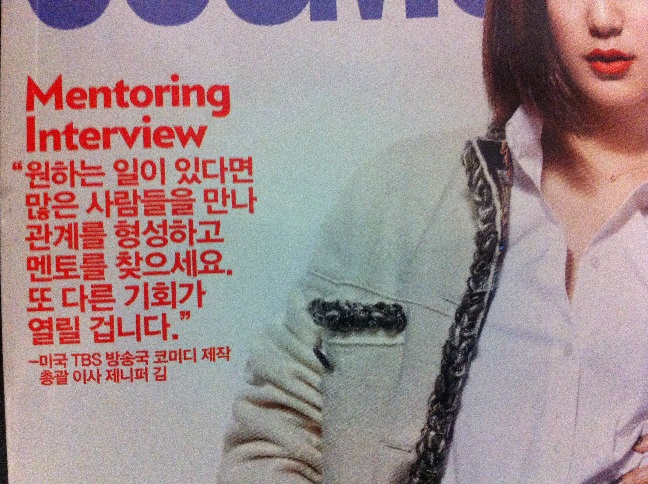

Vocabulary
Nouns:
정성 = effort, devotion
Notes: An explanation of the meaning of “성” in 정성 can be found in Lesson 135.
My wife and I are at the stage that we are making our own baby food to give to my daughter. It takes a lot of time and effort to make your own baby food. Every time we make it (which is every day), she always says “아… 이게 진짜 정성이야.” It’s difficult to translate this, but it’s something like “Ah… this really takes a lot of time, effort and devotion.”
Examples:
정성을 다해서 이 음식을 만들었어요
= I gave it my best when I made this food
제가 당신을 위해 정성 들여서 만든 음식입니다
= This is a food that I made for you by putting all of my love/effort into it
배낭 = backpack
Common Usages:
배낭가방 = backpacker style backpack
배낭여행 = backpacking (travelling)
배낭여행자 = backpacker
Examples:
이 배낭여행용 가방이 비싼 편이었어요
= This backpacker backpack was fairly expensive
유럽에는 전 세계에서 온 배낭 여행자들이 많아요
= There are a lot of backpackers from around the word in Europe
산티아고는 가게 앞 길가에 쭈그리고 앉아 배낭에서 책 한 권을 꺼내 들었다
= Santiago sat/squatted in-front of the store and pulled a book out of his bag.
서랍 = drawer
Common Usages:
서랍장 = another way to refer to a set of drawers
Examples:
옷을 다 벗고 서랍에 넣어 주세요
= Please take off your clothes and put them in the drawer
서랍을 열어서 돈을 찾았어요
= I opened the drawer and then found the money (in the drawer)
실종자 = missing person
Examples:
경찰관이 모여서 실종자를 찾았어요
= The police found the missing person through/by gathering (and looking for him/her together)
경찰관이 실종자를 찾아서 집에 연락했어요
= The police officer found the missing person and then contacted the house (of the missing person)
지구본 = globe
Examples:
지구본을 사용해서 지도를 그렸어요 = He used the globe to draw a map
그 도시를 지구본에서 찾으면 저한테 알려주세요 = When you find that city on the globe, let me know
구호 = relief, aid
Common Usages:
구호품 = aid (products – things like bandages, medicine and food)
응원 구호 = chant
Examples:
우리 나라는 가난한 나라에 구호품을 많이 보내요
= Our country (usually used to refer to Korea) sends a lot of relief/aid to poor countries
내일 체육대회가 있어서 오늘 안에 응원 구호를 정하고 연습해야 돼요
= Tomorrow is sports day, so we need to set and practice our chant by today
연설 = speech
Examples:
대통령이 연설을 해서 청중을 사로잡았다
= The president captivated the audience through/with a speech
그 말을 연설에 말하면 사람들이 분명히 반대할 거예요
= If you say that in the speech, people will definitely disagree (with it)
저는 오바마 대통령이 한국에서 연설을 하는 것을 보고 싶지만 강당이 이미 가득 찼어요
= I want to see President Obama’s speech in Korean but the lecture hall is already completely full
소매 = sleeve
Common Usages:
소매치기 = pick pocketing
Examples:
설거지를 하기 전에 소매를 걷어 올렸어요 = Before I did the dishes, I rolled up my sleeves
물을 가지고 공연장에 못 들어가서 소매에 넣고 몰래 들어갈 거예요 = You can’t bring water into the theatre, so I put I’ll put it in my sleeve so nobody knows
Verbs:
뛰어다니다 = to run around an area
Examples:
아이들이 놀이터에서 뛰어다녔어요 = The kids were running around the playground
우리가 어렸을 때 밖에서 많이 뛰어다녔는데 요즘 애들이 밖에 안 나가고 집에서 컴퓨터만 해요 = When we were young, we used to play outside a lot, but the kids these days don’t go outside, and they just stay at home and use/play the computer
알려주다 = to let somebody know
학교에 가면 알려 주세요 = When/if you go to school, let me know
작품을 완성하자마자 바로 저에게 알려주세요
= As soon as you have completed this piece, please let me know immediately
제가 예산계획을 제출하니 혹시 추가하고 싶은 게 있으면 알려주세요
= I am going to submit the budget plan, so if by chance you have something you want to add, let me know
오늘부터 한 명씩 개별면담이 진행될 예정이니 가능한 시간을 알려주세요
= From today, we will are scheduled to have one on one interviews, so let me know a time that you can do it
지켜보다 = to protect by watching (to watch over)
Examples:
제가 잠깐 나갈 거라서 애기를 지켜봐 주세요
= I’m going to go out for a moment, so please watch the baby
제 남자친구는 항상 제 곁을 지켜주는 소중한 사람이에요
= My boyfriend is a precious person who always protects (is by) my side
비켜서다 = to stand/step aside
Examples:
사람이 갑자기 많이 와서 저는 그냥 비켜섰어요
= All of a sudden many people came, so I just stepped aside
이 실험이 조금 위험해서 살짝 비켜서면 좋을 것 같아요
= This experiment is a little dangerous, so it would be good if you moved/stepped aside a bit
올려놓다 = to place something on something
Common Usages:
냄비를 불에 올려놓다 = to put a pot on a stove (over a fire)
Examples:
방에 들어가서 책을 책상에 올려놓았어요 = I went into the room and put my book on the desk
이 전철에 가방을 올려놓을 수 있는 선반이 없군 = I didn’t realize that there was no shelf to put your bag onto on the subway
뛰어가다 = to run to (to go by running)
Examples:
너무 늦어서 학교에 뛰어갔어요 = I was very late, so I ran to school
저는 그 무서운 것을 보고 즉시 뛰어갔어요 = I ran away immediately after I saw that scary thing
달려가다 = to run to (to go by running)
Examples:
너무 늦어서 학교에 달려갔어요 = I was very late, so I ran to school
멀리서 버스가 정류장에 도착하는 것을 보고 저는 정류장에 빨리 달려갔어요 = I saw the bus arrive at the bus stop from afar, then ran quickly to the bus stop
뛰어오다 = to come running
Examples:
강아지가 오랜만에 저를 보고 저한테 뛰어왔어요
= My puppy saw me for the first time in a while and came running towards me
학교 끝나고 저의 딸이 학교 나와서 저한테 뛰어오는 것이 제일 귀여워요
= My daughter finishing school and running towards me is the cutest
달려오다 = to come running
Common Usages:
한걸음에 달려오다 = to come in a heartbeat
Examples:
저의 강아지는 제가 부르기만 하면 어디서든지 달려와요
= If I so much as call him, wherever he is, my puppy comes running
친구가 저를 걱정해서 학교에서 저의 집까지 한걸음에 달려왔어요
My friend was worried about me, so he came to my house in a heartbeat
매혹하다 = to captivate
Examples:
그는 자신의 아름다움에 매혹되어 결국 호수에 빠져 죽었다
= He was captivated by its beauty, and then (so) he eventually drowned in the lake
제가 화학 선생님이라서 수업 시간 동안 신기한 실험으로 학생들을 매혹하는 것이 좋아요
= I am a chemistry teacher, so I like captivating students with cool/interesting experiments during class
통하다 = to flow through, to move through
The word “통하다” has many meanings depending on the situation. Most of these meanings somehow relate to two things being connected, and there being a passageway or flow between those two things. For example:
For something to be flowing (i.e. not blocked)
이 방은 공기가 잘 안 통해요 = Air doesn’t flow well in this room
For two places to be connected:
이 식당에 옆 식당과 통하는 길이 있어요 = There is a road/passage that connects this restaurant with the restaurant next door
To be able to understand what one is saying (usually 말이 통하다)
그 사람과 말이 안 통해서 그 사람을 이해할 수 없어요 = I couldn’t understand that person because I didn’t know what he was trying to say (couldn’t communicate with him)
To be known as some sort of position
한국에서 그 여자가 제일 예쁜 가수로 통한다 = That girl is known as the pretties singer in Korea
To have nothing to talk about/not talk very often:
우리 아빠가 죽은 후에 엄마랑 말이 잘 안 통해요 = Since our dad died, I haven’t had much to talk about with my mother (haven’t talked with my mother)
When you go “through” a place:
불이 나고 문이 막혀 있어서 창문을 통해 빠져나갔어요 = A fire started, and because the door was blocked, I escaped through the window
When you obtain (learn) something through some object:
교과서를 통해서 그 사실을 배웠다 = I learned that fact through (from) that book
When you obtain (learn) something through some process:
직접 해 본 실험을 통해서 과학에 관심이 생기기 시작했다 = I started to be interested in science through (from) doing experiments in person
쭈그리다 = to crouch, to squat
Common Usages:
쭈그리고 앉다 = to crouch over and sit down
Examples:
슬기가 몸을 쭈그려서 예쁜 꽃의 향기를 맡아봤어요
= Seulgi crouched over and smelled the (fragrance of) the beautiful flowers
산티아고는 가게 앞 길가에 쭈그리고 앉아 배낭에서 책 한 권을 꺼내 들었다
= Santiago sat/squatted in-front of the store and pulled a book out of his bag.
맡다 = to smell
Examples:
냄새가 한번 맡아 봐요 = Try smelling this (once)
제가 그 꽃의 향기를 맡아도 돼요? = Can I smell those flowers?
슬기가 몸을 쭈그려서 예쁜 꽃의 향기를 맡아봤어요 = Seulgi crouched over and smelled the (fragrance of) the beautiful flowers
배신하다 = to betray
Common Usages:
배신자 = betrayer
Examples:
이번에도 우리를 배신하면 더 이상 용서하지 않을 거예요
= If you betray us this time as well, we won’t forgive you anymore
죽을 때까지 믿을 수 없을 만큼 저를 배신했어요
= He betrayed me to the point that I can’t trust him for the rest of my life
종합하다 = to put together, to synthesize
Common Usages:
종합소득세 = aggregate income tax (that includes all of one’s earnings)
종합선물세트 = a package “set” that is often sold during major holidays in Korea for people to give as gifts
Examples:
그 선수 종합 점수는 98입니다 = That athlete’s aggregate/total score is 98
각 학생들의 의견을 종합해서 최종 결과를 발표할게요 = I will get the opinion of each student and eventually/finally announce the results
사로잡다 = to captivate
Common Usages:
마음을 사로잡다 = to captivate one’s heart
청중을 사로잡다 = to captivate an audience
Examples:
대통령이 연설을 해 청중을 사로잡았다 = The president gave a speech and captivated the audience
그 여자가 아주 예뻐서 어디를 가도 모든 남자를 사로잡아요 = That girl is very beautiful wherever she goes, she captivates all of the men
전력하다 = to try one’s best
Common Usages:
전력을 다하다 = to use all of one’s might
전력분야 = the area/field in which one focuses
Examples:
저는 전력을 다해서 이 일을 내일까지 마무리해 볼 거예요
= I will use all of my power and try to finish this work by tomorrow
저의 전력분야는 화학이기 때문에 다른 분야는 잘 몰라요
= My area of focus is chemistry, so I don’t know other fields well
마무리하다 = to finish off, to wrap up
Examples:
우리는 힘을 다 합해서 일을 마무리했어요
= We put together all of our efforts and finished/wrapped up that job/task
매년 말에 한 해를 마무리하는 행사가 많아요
= There are a lot of events that close out the year at the end of every year
저는 전력을 다해서 이 일을 내일까지 마무리해 볼 거예요
= I will use all of my power and try to finish this work by tomorrow
Passive Verbs:
실종되다 = for a person to go missing
Examples:
매년 100명 이상의 아이들이 실종돼요
= Every year there are more than one hundred children that go missing
이 사람이 어제 9시경 실종되어서 혹시라도 비슷한 사람을 보면 경찰에 신고하세요
= This person went missing yesterday around 9:00, so if you happen to see a similar person, contact (report it to) the police
Adjectives:
평범하다 = to be ordinary, to be plain
Examples:
그 남자가 삼성에 근무해서 평범한 사람보다 돈이 더 많은 편이에요
= That man works for Samsung, so he has more money than ordinary people
그 연예인이 유일하게 원하는 것은 다른 사람들이 자기를 평범한 사람처럼 대우하는 것이에요 = The only thing that celebrity wants is for other people to treat her like a normal person
Adverbs and Other Words:
스승의 날 = teachers day
Examples:
스승의 날은 매년 5월 15일입니다 = Teacher’s day is every year on May 15th
내일은 스승의 날이니 선생님을 위해 선물을 꼭 사세요
= Tomorrow is Teacher’s day, so make sure you buy a present for your teacher
Introduction
In this lesson, you will learn how to apply ~아/어(서) to sentences. Explaining this concept is probably the most difficult of all grammatical forms, simply because the meaning is so subtle. Nonetheless, this concept is very common, and needs to be explained. Let’s get started.
Clause Connector: ~아/어(서)
In Lesson 17, you learned about the grammatical principle ~고 and how it can be used to indicate that one clause (or action) happens after another. For example:
저는 밥을 먹고 갈 거예요 = I will eat then go
You also learned how it can be compared to ~아/어(서), which can also be added to sentences where one clause (or action) happens after another. For example, in Lesson 17 you saw the following simple example:
저는 당근을 칼로 잘라서 냉장고에 넣었어요
= I cut the carrots with the knife then put them in the fridge
저는 당근을 칼로 자르고 냉장고에 넣었어요
= I cut the carrots with the knife then put (them) in the fridge
In addition to its cause-and-effect meaning (which you learned about in Lesson 37), connecting two clauses with ~아/어(서) can have different meanings. Let’s look at each meaning individually:
An Intrinsic Temporal Relationship: ~아/어(서)
When ~아/어(서) is used to connect two clauses, the action in the first clause and the action in the second clause occur in the order in which they are said. This is the same as when ~고 is used, but there doesn’t need to be a direct connection between the actions in the two clauses when ~고 is used. For example:
저는 밥을 먹고 갈 거예요 = I will eat then go
저는 자고 한국어를 공부했어요 = I slept then studied Korean
In the above examples, aside from the fact that the first action and the second action occurred one after another, there is no direct relationship between the two actions. When you use ~아/어(서), however, there is more likely to be an intrinsic relationship between the two clauses. That is – not only did the second action happen after the first action, but the second action happened because the first action allowed it to.
In its simplest form, this is why (as you learned in Lesson 17) ~아/어(서) is often added to 가다 and 오다. The second action of the clause occurred only after/because the first clause allowed it to happen.
For example:
저는 학교에 가서 공부할 거예요 = I will go to school and then study
(“Studying” could not have happened if I didn’t go to the school, right?)
우리는 집에 와서 바로 잤어요 = We came home and went to sleep immediately
(“Sleeping” could not have happened if we didn’t come home, right?)
Below are some examples where you can see ~아/어(서) being used to connect two clauses:
The meaning of ~아/어 and ~아/어서 is identical in the following examples:
새로운 컴퓨터를 사 작업을 했어요
새로운 컴퓨터를 사서 작업을 했어요
= I bought a new computer, and then did my work (using that computer)
케이크를 만들어 친구들에게 나눠 줬어요
케이크를 만들어서 친구들에게 나눠 줬어요
= I made a cake, and then gave it (that cake) out to my friends
서랍을 열어 돈을 찾았어요
서랍을 열어서 돈을 찾았어요
= I opened the drawer and then found the money (in the drawer)
경찰관이 실종자를 찾아 집에 연락했어요
경찰관이 실종자를 찾아서 집에 연락했어요
= The police officer found the missing person and then contacted the house (of the missing person)
그는 고개를 들어 그녀를 바라봤어요
그는 고개를 들어서 그녀를 바라봤어요
= He lifted his head and stared at her
그는 자신의 아름다움에 매혹되어 결국 호수에 빠져 죽었다
그는 자신의 아름다움에 매혹되어서 결국 호수에 빠져 죽었다
= He was captivated by his own beauty, and then eventually drowned in the lake
Here is a sentence that appeared on the cover of a Korean Cosmopolitan magazine:

“원하는 일이 있다면 많은 사람들을 만나 관계를 형성하고 멘토를 찾으세요. 또 다른 기회가 열릴 겁니다.” = If you have something (a job) that you want to do, meet lots of people, and develop relationships, and search for a mentor. Another opportunity will be open.
In all of the cases above, ~고 can replace ~아/어(서). As I mentioned, you are more likely to find ~아/어(서) being used if you feel there is an intrinsic connection between the two clauses.
At this point, I would like to introduce you to a usage of ~아/어서 that you haven’t learned about yet.
An Action Happens Through the Means of Another Action: ~아/어서
~아/어서 can be attached to a verb to indicate “how” or “through what means” a second action takes place. The simplest example you will find would be:
저는 걸어서 집에 갔어요 = I went home by walking (I walked home)
Here, ~아/어서 is added to 걷다 to indicate that the second action (going home) occurred by walking. In these types of sentences, where ~아/어서 is being used to indicate a “method” or “means,” “서” is not optional. The sentence above is not the same as this sentence:
저는 걸어 집에 갔어요
Here are two examples that are similar to examples introduced in the previous section, but modified to fit the usage of “through” instead of “and then:”
새로운 컴퓨터를 써서 문제를 풀었어요
= I solved the problem through/using a new computer
경찰관이 모여서 실종자를 찾았어요
= The police found the missing person through/by gathering (and looking for him/her together)
Below are many other examples. Notice how the first action is the method in which the second action occurs through.
슬기가 몸을 쭈그려서 예쁜 꽃의 향기를 맡아봤어요
= Seulgi crouched over and smelled the (fragrance of) the beautiful flowers
제가 당신을 위해 정성 들여서 만든 음식입니다
= This is a food that I made for you by putting all of my love/effort into it
대통령이 연설을 해서 청중을 사로잡았다
= The president captivated the audience through/with a speech
저는 전력을 다해서 이 일을 내일까지 마무리해 볼 거예요
= I will use all of my power and try to finish this work by tomorrow
몇 가지 예를 사용해서 설명했어요
= I explained it through many types of examples
지구본을 사용해서 지도를 그렸어요
= He used the globe to draw a map
우리는 힘을 다 합해서 일을 마무리했어요
= We put together all of our efforts and finished/wrapped up that job/task
Although I mentioned that “서” is not optional, you could also see sentences like this:
새로운 컴퓨터를 써 문제를 풀었어요
경찰관이 모여 실종자를 찾았어요
슬기가 몸을 쭈그려 예쁜 꽃의 향기를 맡아봤어요
제가 당신을 위해 정성 들여 만든 음식입니다
대통령이 연설을 해 청중을 사로잡았다
저는 전력을 다해 이 일을 내일까지 마무리해 볼 거예요
몇 가지 예를 사용해 설명했어요
지구본을 사용해 지도를 그렸어요
우리는 힘을 다 합해 일을 마무리했어요
What’s going on? I thought you said that the “서” was not optional? If it has to be included, why has it been omitted from the examples above?
There is a lot of overlap between the usages of ~아/어서 and ~아/어(서). The first one (where 서 is not optional) is used to indicate a method in which an action occurred. The second one (where 서 is optional) is used to indicate a direct temporal relationship.
The problem here is that the examples immediately above (which show a temporal relationship between two clauses) can also include 서 with no difference in meaning. For example:
새로운 컴퓨터를 써서 문제를 풀었어요
경찰관이 모여서 실종자를 찾았어요
슬기가 몸을 쭈그려서 예쁜 꽃의 향기를 맡아봤어요
제가 당신을 위해 정성 들여서 만든 음식입니다
대통령이 연설을 해서 청중을 사로잡았다
저는 전력을 다해서 이 일을 내일까지 마무리해 볼 거예요
몇 가지 예를 사용해서 설명했어요
지구본을 사용해서 지도를 그렸어요
우리는 힘을 다 합해서 일을 마무리했어요
Here, we have an incredibly ambiguous situation. What meaning is the speaker intending to make? I have had many discussions with Korean people about these types of sentences. For example, I would ask them about the specific meaning and feel of this sentence:
경찰관이 모여서 실종자를 찾았어요
I asked:
- Did the police find the person through working/gathering together? Or
- Did the police meet/gather together and then find the missing person?
The answer: The specific meaning is up to the speaker to make clear or for the listener to interpret. It may be unclear in the situation, or the context might be able to indicate the specific meaning. Either way, the result is usually the same.
There is a lot of overlap between these two usages. However, in some situations you will find that a meaning expressed by ~아/어서 cannot be expressed by ~아/어(서). This is an example that was presented above:
저는 걸어서 집에 갔어요 = I went home by walking (I walked home)
This sentence can only mean that the person went home by walking. It cannot mean that the person walked, and then went home. As such, the following sentence is incorrect:
저는 걸어 집에 갔어요
Now that we know all of that, let’s look at specific ways ~아/어(서) is often used.
Used to combine the meanings of two words: ~아/어
You will often see two words combined with ~아/어 to combine their meanings. This compound word (or whatever you want to call it) can then be used anywhere in a sentence that a normal verb could be used. When used like this, “서” is not attached to ~아/어.
You first learned about these types of words in Lesson 15 with words like 들어가다 and 들어오다. However, in that lesson I wasn’t able to discuss how the words (like 들다 and 가다) are connected via ~아/어.
An example of a word where this is done is “뛰어다니다”
The word “다니다” means to go/walk around a place, and the word “뛰다” means to run. By combining these words with the use of “~아/어”, we create a word that combines the meanings of the two. Below are some examples of words where this is done:
걸어가다 = to go by walking (걷다 + 가다)
걸어오다 = to come by walking (걷다 + 오다)
다녀오다 = to go and then come back (다니다 + 오다)
뛰어다니다 = to run around an area (뛰다 + 다니다)
돌아보다 = to turn and look (돌다 + 보다)
알려주다 = to let somebody know (알리다 + 주다)
지켜보다 = to protect by watching (to watch over) (지키다 + 보다)
비켜서다 = to stand/step aside (비키다 + 서다)
올려놓다 = to place something on something (올리다 + 놓다)
뛰어가다 = to run to (to go by running) (뛰다 + 가다)
달려가다 = to run to (to go by running) (달리다 + 가다)
뛰어오다 = to come by running (뛰다 + 오다)
달려오다 = to come by running (달리다 + 오다)
The words above are all stand-alone verbs (albeit, created by connecting their meanings via ~아/어). The first three words in that list have already been introduced in the vocabulary lists of previous lessons. For example, 걸어가다and 걸어오다are introduced in Lesson 17. The remaining verbs in the list above have not been introduced in the vocabulary list of any lesson yet, so they are included in the vocabulary list of this lesson. Here are some examples of these verbs in sentences:
아이들이 놀이터에서 뛰어다녔어요 = The kids were running around the playground
제가 옷을 갈아입는 동안 돌아보지 마세요 = While I’m changing, don’t turn around
그 도시를 지구본에서 찾으면 저한테 알려주세요 = When you find that city on the globe, let me know
제가 잠깐 나갈 거라서 애기를 지켜봐 주세요 = I’m going to go out for a moment, so please watch the baby
사람이 갑자기 많이 와서 저는 그냥 비켜섰어요 = All of a sudden many people came, so I just stepped aside
방에 들어가서 책을 책상에 올려놓았어요 = I went into the room and put my book on the desk
너무 늦어서 학교에 뛰어갔어요 = I was very late, so I ran to school
너무 늦어서 학교에 달려갔어요 = I was very late, so I ran to school
어떤 사람이 저한테 뛰어왔어요 = Some person was (came) running towards me
어떤 사람이 저한테 달려왔어요 = Some person was (came) running towards me
Sometimes you will notice two verbs connected with ~아/어 with a space between the first and second verb. You don’t really need to distinguish between the two, but when there is a space it means that you are looking at two separate verbs that are being connected by ~아/어 to combine their meanings. If you do not see the space, you are looking at one word. Again, you don’t really need to worry about this, because Korean people often don’t know when to use the space or not. Nonetheless, here are some examples of two separate verbs being combined by ~아/어. Technically, these are not seen as standalone verbs and are therefore not included in any vocabulary lists.
걸어 다니다 = to walk around an area
돌려 보내다 = to send something back
주워 모으다 = to pick up and collect
뛰어 넘다 = to run/jump over something
꺼내 놓다 = to take out and put down
걸어 놓다 = to place something hanging/to hang up
결합해 만들어지다 = to be made through combining something
아껴 쓰다 = to save something (to use, but to save while using)
걷어 올리다 = to tuck up one’s sleeves/pants
Despite being two words, the fact that their meanings/usages combine often confuses Korean people and makes them think that they are one word. Either way, they can be used in sentences where the meaning of the whole construction wants to be expressed. For example:
우리는 서울에서 그냥 걸어 다녔어요 = We just walked around Seoul
너무 많으면 나머지를 돌려 보내도 돼요 = If it is too much, you can send the rest back
방에 있는 장난감을 다 주워 모으세요 = Pick up and collect all of the toys in your room
강아지가 울타리를 뛰어 넘었어요 = The dog ran/jumped over the fence
돈을 지갑에서 다 꺼내 놓았어요 = I took out all of the money from my wallet and put it (somewhere)
셔츠를 옷걸이에 걸어 놓았어요 = I hung/placed my shirt on the hanger
물은 산소와 수소로 결합돼 만들어진다 = Water is made from combining oxygen and hydrogen
이제부터 돈을 아껴 써야 돼요 = From now on, we need to save money (not use much money)
설거지를 하기 전에 소매를 걷어 올렸어요 = Before I did the dishes, I rolled up my sleeves
Before we finish, there are two specific words that often get connected to ~아/어(서), which I want to talk about.
The many meanings of 통하다
The word “통하다” has many meanings depending on the situation. Most of these meanings somehow relate to two things being connected, and there being a passageway or flow between those two things. When I first studied the meanings of 통하다, I always envisioned some sort of tube connecting the objects in question. Although kind of ridiculous, I always found it helpful to think about it like this.
Here are some of the many meanings 통하다 can have:
For something to be flowing (i.e. not blocked)
이 방은 공기가 잘 안 통해요 = Air doesn’t flow well in this room
For two places to be connected:
이 식당에 옆 식당과 통하는 길이 있어요 = There is a road/passage that connects this restaurant with the restaurant next door
To be able to understand what one is saying (usually 말이 통하다)
그 사람과 말이 안 통해서 그 사람을 이해할 수 없어요 = I couldn’t understand that person because I didn’t know what he was trying to say (couldn’t communicate with him)
To be known as some sort of position
한국에서 그 여자가 제일 예쁜 가수로 통한다 = That girl is known as the pretties singer in Korea
To have nothing to talk about/not talk very often:
우리 아빠가 죽은 후에 엄마랑 말이 잘 안 통해요 = Since our dad died, I haven’t had much to talk about with my mother (haven’t talked with my mother)
Okay… so why am I introducing 통하다 in this lesson?
통하다 has some usages where it is common to see it being used attached with ~아/어(서) to form 통해(서). In these cases, 통하다 usually translates to “through.” The following are some of these usages.
When you go “through” a place:
불이 나고 문이 막혀 있어서 창문을 통해 빠져나갔어요 = A fire started, and because the door was blocked, I escaped through the window
When you obtain (learn) something through some object:
교과서를 통해서 그 사실을 배웠다 = I learned that fact through (from) that book
When you obtain (learn) something through some process:
직접 해 본 실험을 통해서 과학에 관심이 생기기 시작했다 = I started to be interested in science through (from) doing experiments in person
Notice that each of these sentences could be expressed using other particles instead of using 통해(서). For example:
불이 나고 문이 막혀 있어서 창문으로 빠져나갔어요
= A fire started, and because the door was blocked, I escaped through the window
교과서로 그 사실을 배웠다
= I learned that fact through (from) that book
직접 해본 실험으로부터 과학에 관심이 생기기 시작했다
= I started to be interested in science through (from) doing experiments in person
One of the most common ways “통해(서)” is used is to indicate that one learns/receives/hears something “through/from” a person. Here are many examples:
친구를 통해 소문을 들었어요 = I heard a rumor from (through) my friend
저는 저의 여자 친구를 통해 한국말을 배웠습니다 = I learned Korean from (through) my girlfriend
저는 저의 교감선생님을 통해 한국말을 배웠습니다 = I learned Korean from (through) my Vice Principal
저는 친구를 통해 그 남자의 전화번호를 받았어요 = I got that man’s phone number from (through) a friend
As with above, each of those sentences could also be expressed using other particles:
친구에게서 소문을 들었어요 = I heard a rumor from my friend
저는 저의 여자 친구한테서 한국말을 배웠어요 = I learned Korean from my girlfriend
저는 저의 교감선생님에게서 한국말을 배웠습니다 = I learned Korean from my Vice Principal
저는 친구에게서 그 남자의 전화번호를 받았어요 = I got that man’s phone number from a friend
Let’s move on and talk about another word that is commonly used with ~아/어(서).
To hurry: 서두러
The verb “서두르다” means “to hurry” and can be used as a stand-alone verb. For example:
왜 이렇게 서둘러요? = Why are you rushing like this?
우리가 안 서둘렀더라면 늦었을 거예요 = If we didn’t rush, we would have been late
서두르다 is more commonly used before another verb connected with ~아/어(서). Here, the meaning of “rushing” is combined with the upcoming verb. For example:
우리는 서둘러 나갔어요 = We hurried (and went) outside
선생님은 서둘러 학생들에게 수업을 가르쳤어요 = The teacher hurried to teach his students the class
비가 와서 밖으로 나가서 서둘러 차로 뛰었어요 = I went outside and hurried to my car because it was raining
As you can see, the word 서둘러 doesn’t necessarily need to be in those sentences. All of those previous sentences would have essentially the same meaning if I were to write them as:
우리는 빨리 나갔어요
선생님은 학생들에게 수업을 빨리 가르쳤어요
비가 와서 밖으로 나가서 빨리 차로 뛰었어요
The usage of ~아/어(서) in Korean sentences is very ambiguous and takes a long time to fully grasp. With many Korean grammatical principles, the best/only way to completely understand a grammatical principle is to be exposed to it enough. The goal of this lesson was to explain ~아/어(서) so that when you are exposed to it, you will be able to extrapolate its meaning. After continuous exposure, your understanding of ~아/어(서) will become more and more natural.